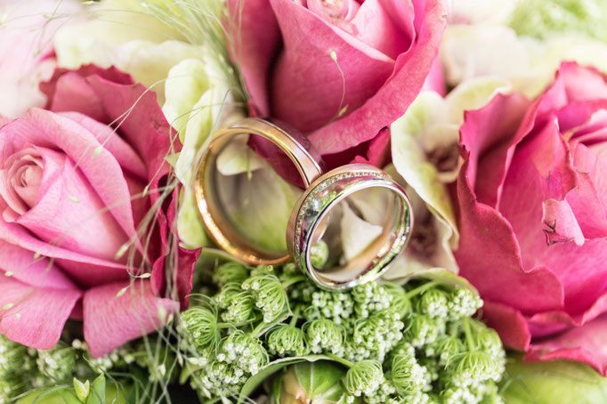
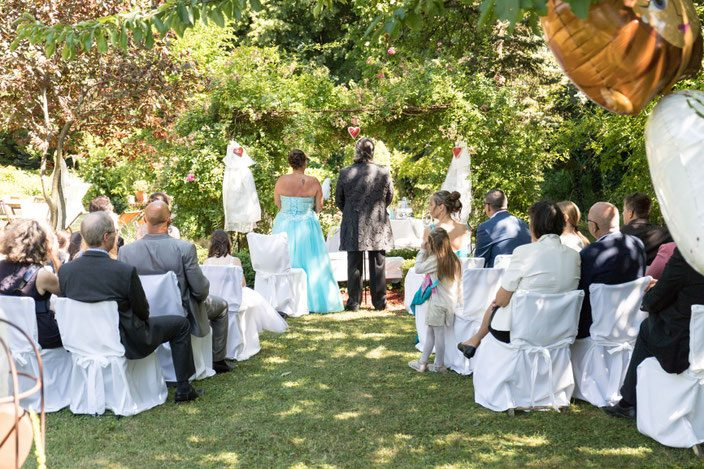
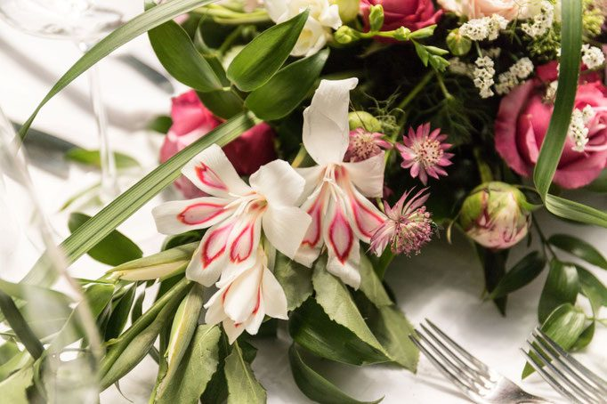

Trauung im Garten
Blumengeschmückter Trauungsplatz, Sektempfang im Grünen, Fotos zwischen Rosenbogen und Gartenteich.
Feiern & Events
Vom Ja-Wort im Naturgarten über das Frühstück mit 40 Freunden bis zur Küchenparty am offenen Holzkohlegrill – alles unter Nuss- und Obstbäumen.
Unsere eleganten Räumlichkeiten und der liebevoll gepflegte Naturgarten machen den perfekten Rahmen für festliche standesamtliche Trauungen möglich.
Eine besonders stimmungsvolle Zeremonie erleben Sie in den Sommermonaten in unserem Naturparadies: Auf einem blumengeschmückten Trauungsplatz geben Sie sich das Ja-Wort. Danach verweilen Sie mit Ihren Gästen bei einem Gläschen Sekt im Grünen, bevor sich die Hochzeitsgesellschaft zur kreativ gestalteten Hochzeitstafel begibt. Erlesene Speisen und Getränke erfreuen Sie und Ihre Gäste.
Besuchen Sie uns und besprechen Sie Ihre Vorstellungen persönlich. Wir stellen ein passendes Menü und die Weinbegleitung nach Ihrem Geschmack zusammen. Es ist uns eine Ehre, wenn Sie Ihre Hochzeit bei uns feiern.


Blumengeschmückter Trauungsplatz, Sektempfang im Grünen, Fotos zwischen Rosenbogen und Gartenteich.

Kreativ gestaltete Tafel, Menü und Weinbegleitung individuell nach Ihrem Geschmack zusammengestellt.

Für Hochzeit, Familien-, Geburtstags- oder Firmenfeier bewirten wir Sie gerne auch außerhalb der regulären Öffnungszeiten.
Frei buchbar von Donnerstag bis Sonntag, 09:00–11:30 Uhr, ab 10 bis 50 Personen.
Es erwartet Sie das Rosenbauchs-Frühstück in drei Gängen – plus Typisch Wien, Ausflug ins Vulcanoland, Basken Pinchos und Irish Breakfast.
Genussbeitrag pro Person. Dazu servieren wir Meinl 1862 Kaffee, Tee oder heiße Schokolade, ab 10:30 Uhr ein Glas Kattus Prosecco Blanc & Rosé oder ein Glas Hirter Pils.
Genussbeitrag pro Person. Ab 10:30 Uhr ein Glas Champagner Blanc & Rosé, ansonsten wie das Klassik Frühstück.
Genuss-Events
Alle Events finden bei begrenzter Teilnehmerzahl statt, Reservierung ist erforderlich.
Niederösterreichische Schaugartentage, Motto „Kräuter im Garten“. Rosenbauchs Gartenbistro von 10:30–17:00 Uhr geöffnet, Gartenführung um 11:00 Uhr mit Karl Rosenbauch. Workshop-Beginn 11:30 Uhr unter dem Motto „Frische Kräuter vom Garten“, gekocht wird am niederländischen Ofyr-Holzgrill.
Genussbeitrag EUR 105 – 4 Gerichte, 3 Weine, hausgemachte Limos, Wasser & Espresso.
Freitag ab 18:00 Uhr, 12 Tapas & 6 Weine: Tuna Tatar & Guacamole · Knuspersardelle & 6-Minuten-Ei · Meeresfrüchtesalat & gefüllte Calamari · Josper-Garnele katalanischer Art · Oktopus-Grammeln & Nektarine · Ibérico-Schinken & Melone-Tomaten-Brot · Minibratwürstl & Fenchelkraut · geschmorte Lammschulter & Eierschwammerl · gebackene Hasenleber & Tzatziki · Sangria & Sorbet · Armer Ritter & Bourbon-Vanilleeis · dunkle Schokolade & Olivenöl. Weinbegleitung Spanien & Portugal.
Genussbeitrag EUR 140 – 12 Tapas, 6 Weine, Wasser, Espresso, Portwein.
Sonntag ab 16:00 Uhr, Flying Dinner im Naturgarten – Zeit zum Fachsimpeln mit der Küchenmannschaft. Gekocht wird am offenen und geschlossenen katalanischen Josper-Holzkohlegrill sowie am niederländischen Ofyr-Holzgrill. Die kulinarischen Hauptdarsteller: Trüffelsalami · Prosciutto · Oliven · Trüffelkäse · Eierschwammerl · Garnele · Oktopus · Steinpilze · Heurige · Muscheln · Branzino · Trüffel · Risotto · Bio-Ente · die alte Kuh · Grillgemüse · Rosmarin-Erdäpfel mit BBQ-Kräuter-Knoblauchsauce · Espresso Affogato · Dessert Surprise. Weinbegleitung Kroatien & Slowenien, weiß–rosé–rot.
Genussbeitrag EUR 140 – 6 Gänge, 6 Weine, Wasser, Espresso, Grappa, Limoncello.
Neu: online statt E-Mail-Pingpong
Sagen Sie uns Anlass, Datum und Personenzahl – wir melden uns mit einem Vorschlag für Menü und Weinbegleitung. Für die Genuss-Events reservieren Sie hier Ihre Plätze, die Teilnehmerzahl ist begrenzt.
Ein Abend im Rosenbauchs lässt sich verschenken – als Wertgutschein in frei wählbarer Höhe oder für ein Genuss-Event.
Betriebsurlaub: 24. August bis 1. September. In dieser Zeit sind keine Feiern möglich.